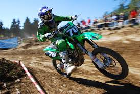
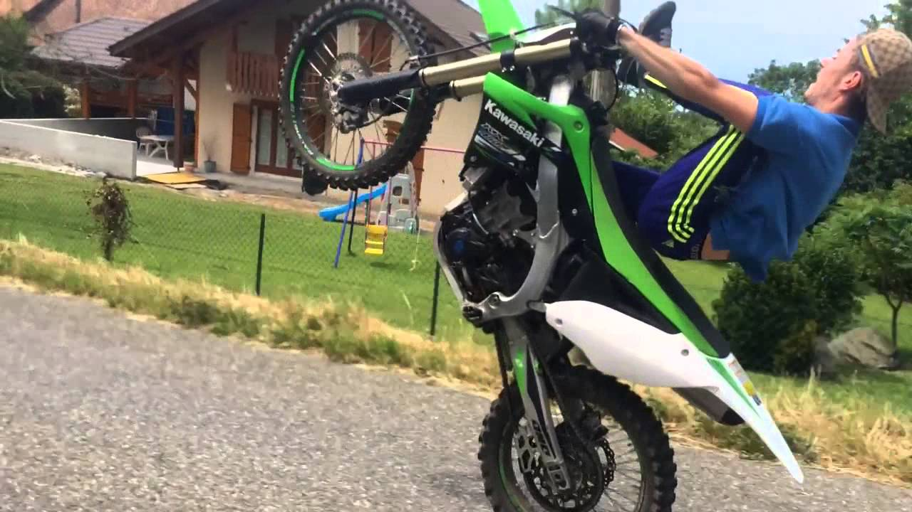
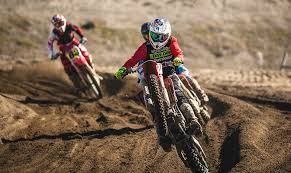
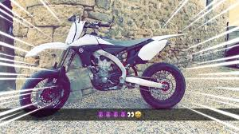
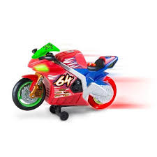
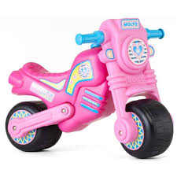
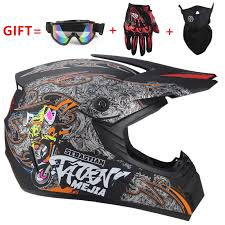

Le moto-cross ou motocross est un sport extrême de compétition motocycliste consistant en une course de vitesse sur un circuit tout-terrain accidenté. La première course de moto-cross se déroula à Camberley dans le Surrey (Angleterre) en 1924. Le sport connut ensuite un essor important en Grande-Bretagne, puis en Belgique et en France. Il gagna peu à peu l’Europe centrale puis les Etats-Unis où il a attire un nombre croissant de pratiquants.
La moto-cross est un sport mécanique touchant le monde du deux roues. Ce sport se pratique sur une moto de cross non homologuée et préparée afin de résister aux différents chocs et s'adapter, au mieux, aux terrains accidentés et surfaces difficiles que le circuit présentera. Comme dans la majorité des sports, il existe des championnats de niveau régional et international. La principale autorite de tutelle de ce sport est la Federation internationale de motocyclisme (FIM).
course de moto cross
weedifull qui fait une roue arrière
compétition de moto cross.
photo snap de moto cross.
elle existe aussi en jouet pour enfant.
et pour les filles aussi.
il faut penser aux protections.